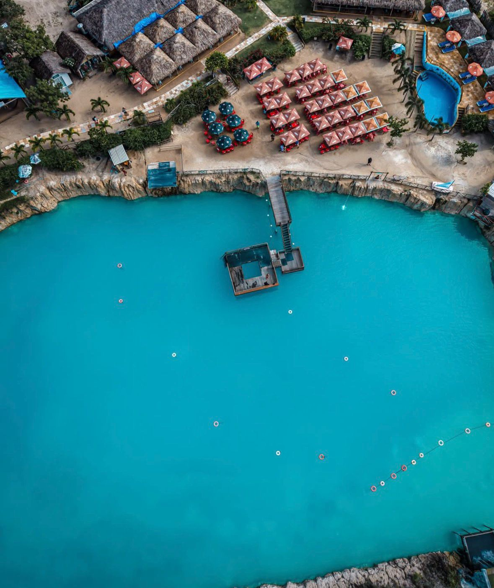
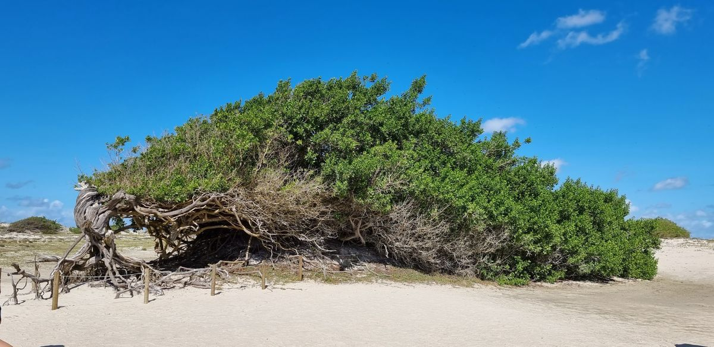
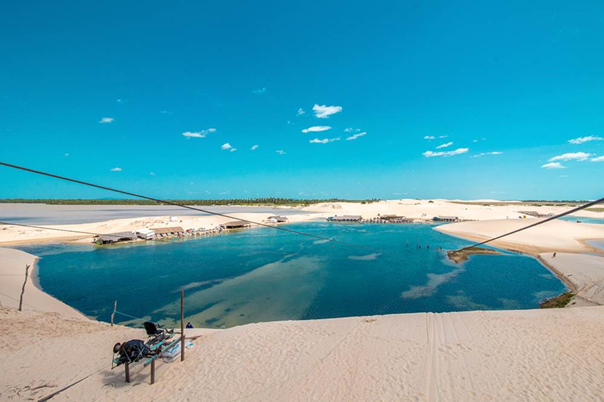
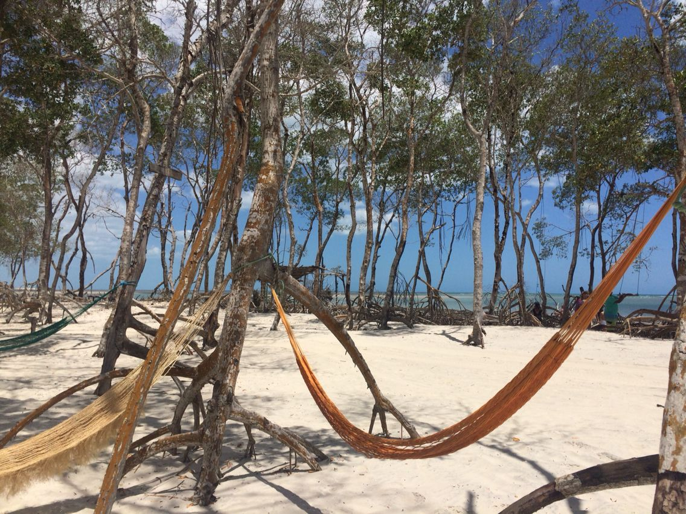
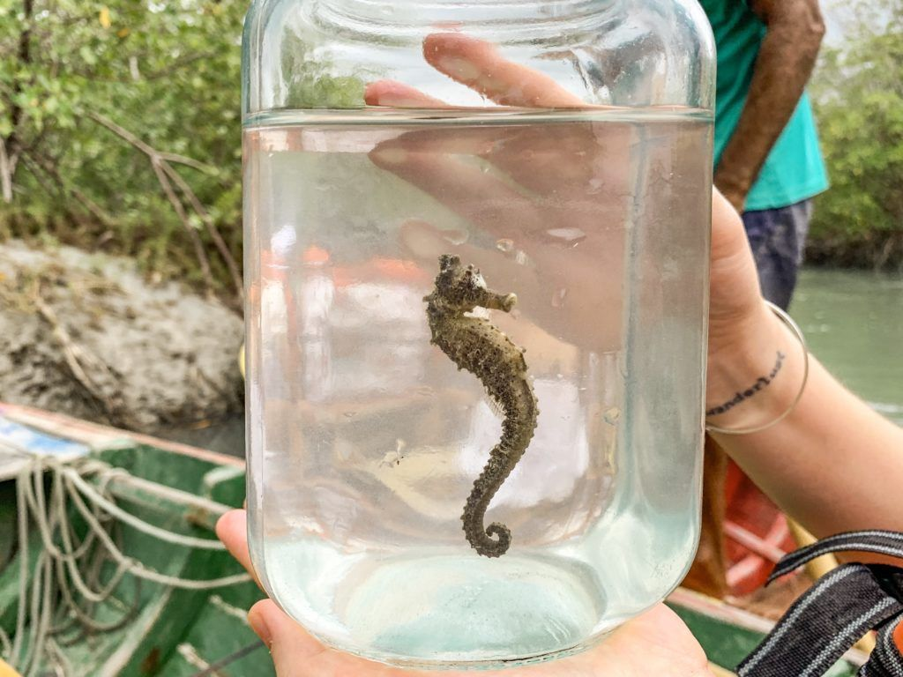
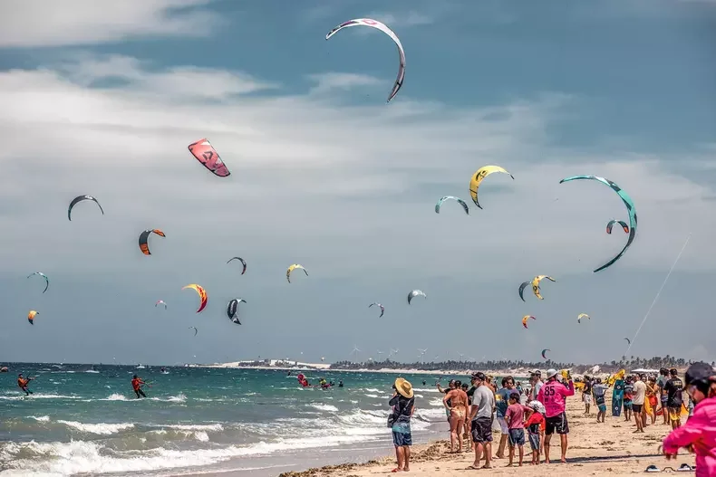
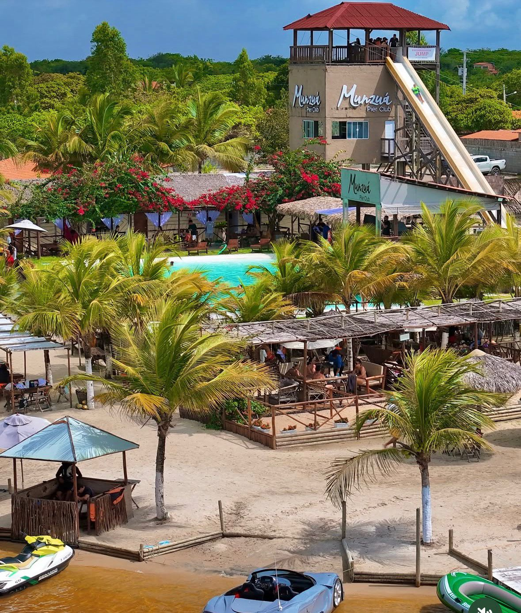

Nossos passeios
Roteiros para todos os perfis
Roteiros fixos e completos — veja as paradas, o veículo e reserve direto pelo WhatsApp.



Litoral Leste
O favorito de quem visita Jeri. Lagoas de água doce quente, mar de esmeralda e dunas deslumbrantes em 6 horas inesquecíveis.
~6 horasHilux, SW4, Buggy e Quadriciclo
Paradas do roteiro
Árvore da PreguiçaBuraco Azul CaiçaraLagun BeachLagoa do ParaísoLagoa do Amâncio
Reservar passeio 


Litoral Oeste
Para quem quer adrenalina. Dunas da Tatajuba, sandboard, travessia de balsa e paisagens que parecem outro planeta.
~6 horasHilux, SW4, Buggy e Quadriciclo
Paradas do roteiro
Passeio Ecologico Cavalos MarinhosMangues em GuriúDunas de TatajubaLago Grande
Reservar passeio 


Barrinha
Dunas brancas e o pôr do sol que todo mundo filma, mas só quem vai entende.
~6 horasHilux, SW4, Buggy e Quadriciclo
Paradas do roteiro
Árvore da PreguiçaPraia do PreáPraia da BarrinhaMunzua Pier Club
Reservar passeio